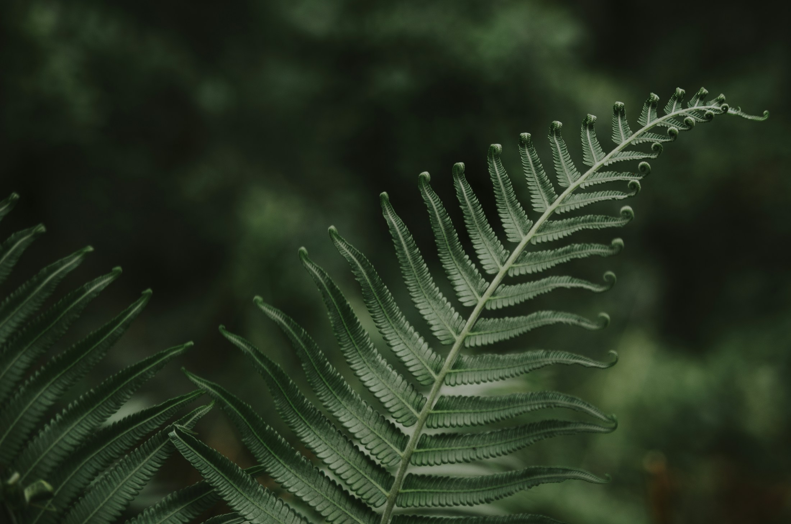

01
Climate
Patterns of temperature, rain, and seasonal change set the conditions for life.
About untamed
An independent exploration of the forces that make our planet wild.
Discover the wild ↓01 / Our perspective
UNTAMED is a field guide to Earth’s wild environments and the relationships that sustain them.
Wilderness is not an empty place. Many landscapes described as wild are also the homes and ancestral territories of Indigenous peoples and local communities. Their histories and knowledge are part of the story.
We explore how water moves, rock changes, and life adapts—and how those processes meet.
02 / The forces that shape it
01
Patterns of temperature, rain, and seasonal change set the conditions for life.
02
The ground beneath every ecosystem holds a longer story of formation and erosion.
03
Ice, rivers, rainfall, and ocean currents move energy and connect distant places.
04
Life is a network of relationships, from microscopic organisms to entire forests.
05
Natural systems unfold across seasons, generations, and geological ages.
03 / Learning to look
Let your eyes follow the water. There is more here than a view.
A practice in paying attention
01
Trace the shape of the land. Follow the water from the ledge to the pool. Notice where movement meets stillness.
02
Notice how water, rock, and woodland meet. Follow one connection from the falling current to the life along its banks.
03
Return in another season or a different light. What has shifted? What remains? Familiar places still have something to show you.

04 / Deep time
Choose one frond, one patch of shade, one edge of the forest. Notice its shape and surroundings. Come back another day and look for what has changed.
Step into the forest ↗04 / Why it matters
Wild systems are part of the world we share. They influence water, climate, and the conditions that support life.
Explore the five worlds ↗